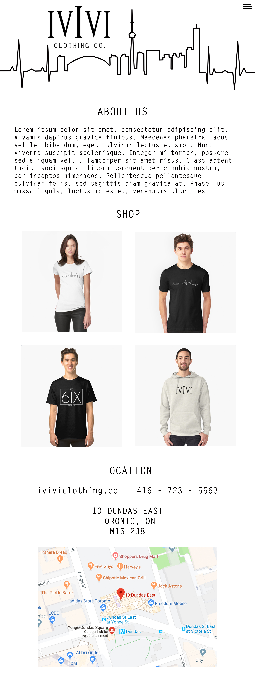

Sarah's Desktop VS. Mobile.
I chose to make a minimalistic site on both the mobile and desktop options because I believe that it is easier for the viewers to understand and use the site. I chose a black and white theme because I think it looks very sleek and professional and can help catch an audiences eye to the more important things on the website. I chose to include things such as location and contact information because it is a business and customers are going to need that information to express their interests or visit the store in person. Having this information will make your store more accessable.
Mobile Site
Desktop Site